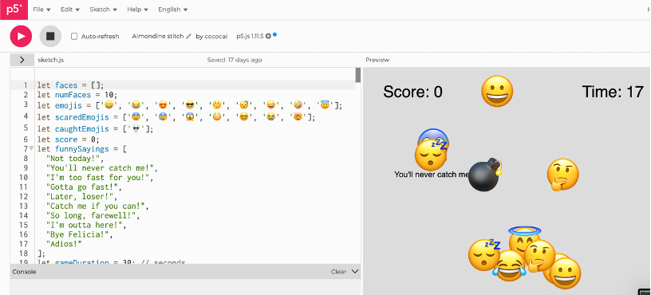

After taking the “Coding with AI” course, my understanding of “AI as more than just a code-writing assistant, but a creative partner” has become more concrete. To put the classroom content into practice, I tried using GitHub Copilot as a collaborator to build a fun emoji interactive mini-game in Visual Studio Code. This was my first time letting AI participate in the entire creative development process, from game rule design to specific syntax implementation. It not only improved efficiency but also inspired me about the expressive possibilities of code art.

I’ve envisioned a simple yet interactive game: players chase multiple constantly moving emoji faces on the screen. These little faces will show fear and dodge when the player gets close, even shouting funny sayings. If clicked successfully, they turn into a “💀” emoji and add to the score. The game also hides a “💣” that immediately ends the game if clicked.
This game isn’t about winning or losing, but about simulating the fun process of “emotional reactions” and “spatial chasing”.
Technical Structure Summary
- Uses the p5.js framework for canvas drawing and logic control.
- Customizes two classes: Face and Bomb, handling emoji movement and game-over triggers respectively.
- Incorporates a mouseClicked() function to process interactions (scoring for clicking smiling faces, ending the game for clicking bombs).
- Implements a countdown mechanism timeLeft and an automatic reset logic for emoji groups.
- Establishes state judgments and transitions for “scared escape” and “clicked death”.
- Designs extendable emojiChangeInterval and funnySayings to enhance expressiveness.
The Collaboration Process with Copilot
During development, I heavily relied on GitHub Copilot’s suggestions:
- When defining the emoji list, Copilot automatically recognized my intention to express emotional changes and proactively supplemented scaredEmojis and caughtEmojis.
- As I structured the Face class, Copilot provided the basic framework for escape logic using atan2 to calculate direction and scaredLevel to adjust expressions.
- When setting up the funnySayings logic, it even generated a set of humor lines with consistent style, helping me shape the characters’ “personalities”.
- While writing the Bomb class and mouseClicked() conditional structure, it accurately inferred interaction rules and quickly generated a reasonable framework.
This entire process made me realize: Copilot isn’t writing code for me, but collaborating on game creation with me.
Reflection
From this project, my deepest insight is: AI suggestions are actually responses to my creativity. It doesn’t proactively define gameplay or visual styles, but continuously provides context-appropriate supplementary suggestions based on the code I write.
For example:
- When I wrote “let scaredEmojis = …”, it supplemented a complete set of “fear response” logic;
- As I created the “saying” variable, it suggested triggering it when approaching and automatically managing display time;
- From structure to tone, it has been imitating my logical direction, making me feel like it’s a co-pilot who understands my style.
This is more meaningful than simply copying and pasting code. It’s not just a tool, but also a mirror of learning that allows me to continuously refine, optimize, and enhance my own expression through collaboration.